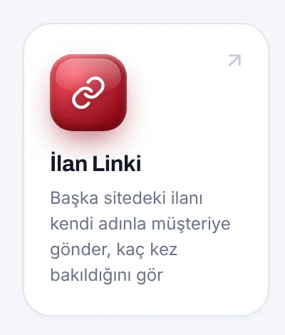
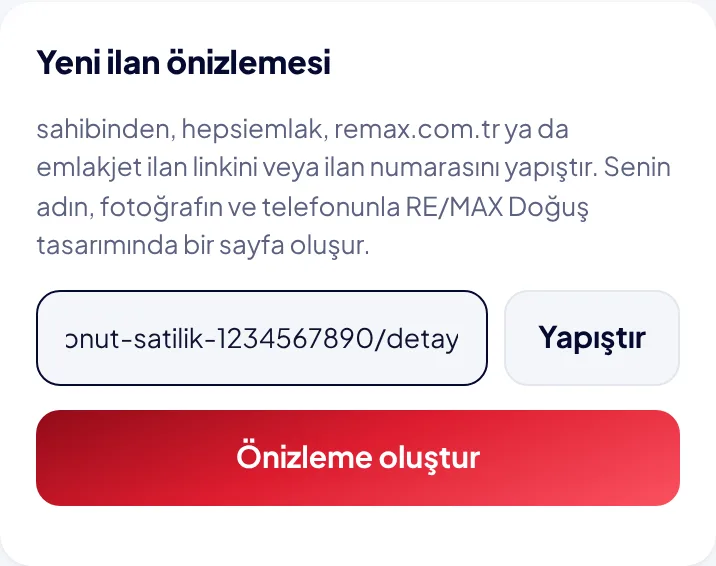
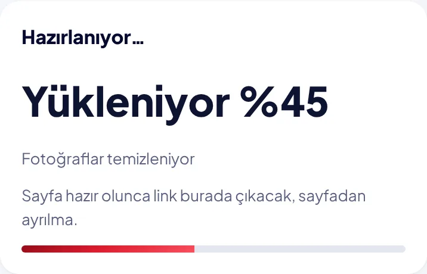
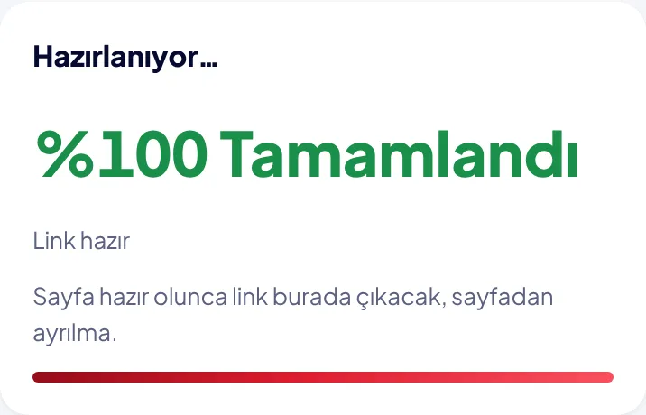
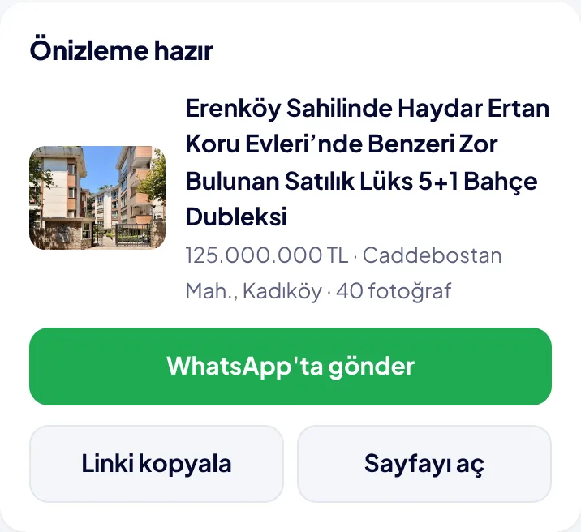
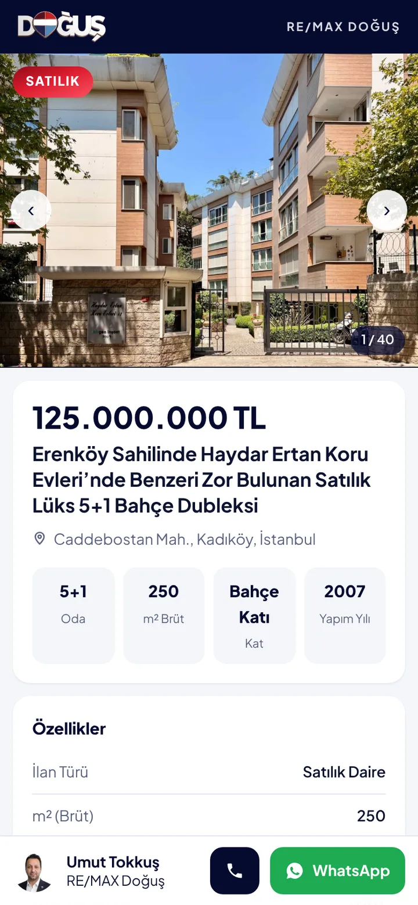
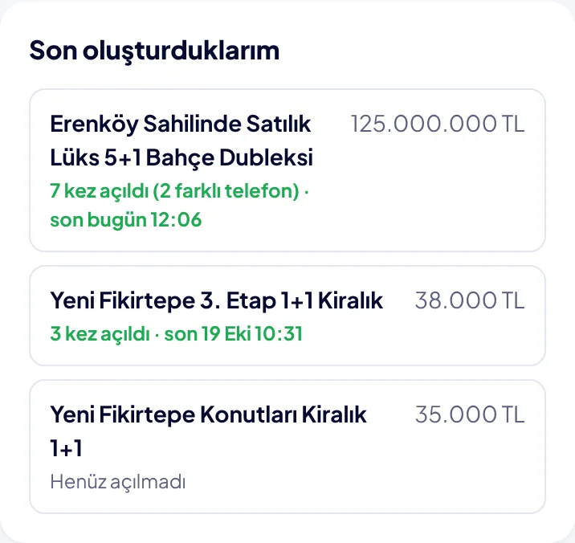

İlan Linki rehberi
Başka sitedeki bir ilanı, senin adın, fotoğrafın ve telefonunla RE/MAX Doğuş sayfası olarak müşteriye gönderirsin. Kaynak site ve ilan sahibi görünmez, sahibinden fotoğraflarındaki yazılar temizlenir.
sahibinden, hepsiemlak, remax.com.tr ve emlakjet ilanlarıyla çalışır. İlan yayında olmalı.
1Portalda İlan Linki kartına dokun
dogusportal.com'u aç, İlan Linki kartına dokun. İlk seferde Danışman Takip PIN'ini yaz, telefon seni hatırlar.

2İlanın linkini kopyala
sahibinden ya da diğer sitenin uygulamasında ilanı aç, Paylaş'a dokun, Linki kopyala'yı seç. İlan numarası da yeterli.
3Yapıştır ve Önizleme oluştur
Yapıştır'a dokun, sonra Önizleme oluştur'a bas.

4Yüzde sayacını bekle
İlan okunur, fotoğraflar temizlenir, sayfa hazırlanır. Genelde yarım dakika sürer. %100 Tamamlandı yazana kadar sayfadan ayrılma.


5WhatsApp'ta gönder
WhatsApp'ta gönder'e dokun ve müşteriyi seç. Linki başka yere atacaksan Linki kopyala, önce kendin bakmak istersen Sayfayı aç.

6Müşteri bunu görür
RE/MAX Doğuş tasarımında ilan sayfası. Altta senin adın, fotoğrafın, Ara ve WhatsApp düğmelerin var.

7Kaç kez bakıldığını gör
Aynı sayfanın altındaki Son oluşturduklarım listesinde her ilanın kaç kez açıldığı ve en son ne zaman bakıldığı yazar. Senin kendi açışların sayılmaz.

Her danışman yalnız kendi ilanlarını görür. Yayından kalkmış ilanlar okunamaz; ilan yayındayken oluştur.
İlan oluşturmaya başla